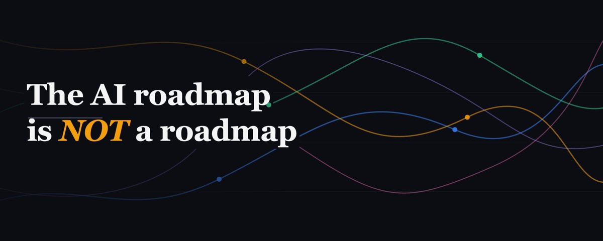
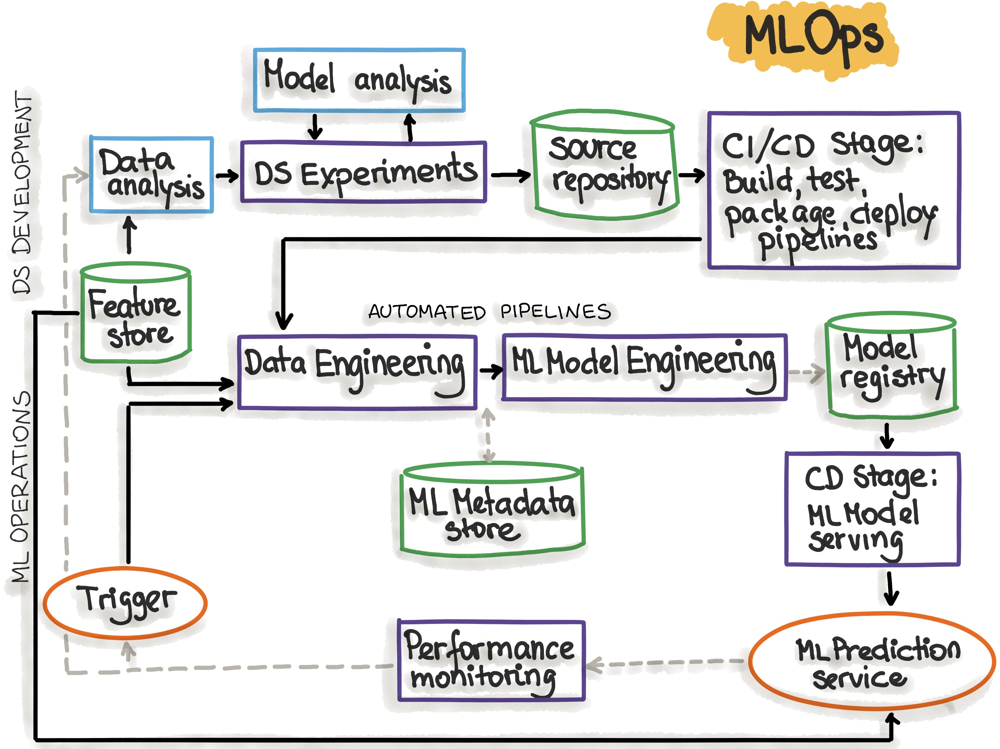
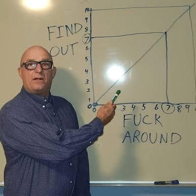

Introduction#
Over the last 12-14 months, I have had several conversations with students, aspirants and pursuers of "AI/ML" Engineering. The very idea of calling it "AI/ML" feels awkward to me, because even though ML is a subset of AI, the two terms are actually are far more different than they have ever been. In research terms, you could argue that modern applied AI driven by the exponential growth of large language models is a derivative of learning algorithms (which it is), but from the lens of somebody from the outside looking in today, applied AI and applied ML almost run parallel to each other (almost).
The world of AI (or ML) do not run on their own though. It's a culmination of decades of principles and solutions that make it possible. Backend engineering remains more essential than ever, Ops and Infra are as valuable as the lost treasure of Atlantis and cybersecurity is non-negotiable in the rampant world of uncertain models. And within all of this, comes the most popular question
How do I get into "AI/ML" ?
The prerequisites roadmap#
The title of this article still stands. It's an uncertain world, one that cannot have a roadmap. It is more of a solution space. But it is built upon a set of ideas that have been followed for years and years that have virtually birthed and maintained several technologies over the year. Some of which are:
Backend engineering#
you train the best model, build the best agent harness, develop the best rag system and all of it is useless if it does not reach people. The most crucial entry of this lineup, from the sense of (A) ease of entry and (B) the market requirements. If you're a decent backend developer who can
- build APIs, understand protocols like REST, gRPC, graphQL
- understand data models and databases
- auth, middleware, caching, rate limiting
- event driven systems, message brokers and queues
- distributed systems, CAP theorem, state management
- monitoring, observability, recovery
Probability#
There is no learning without uncertainty. All of modern ml relies on learning and managing probabilities across events. It starts as simple as coin toss, but goes much deeper as try to model data over it. Amongst researchers and enthusiasts, there are two trains of thoughts that dominate our understanding of probability:
- Frequentist: probability is long run frequency over repeated trials.
- Bayesian: probability works on beliefs and updating beliefs based observations from data.
This leads to differences in modeling choices and how data is used over time. But undoubtedly, the subject of probability is one of the most interesting choices here. Learn
- Probability distributions
- Joint & Conditional Probability
- Bayes Theorem
- Maximum Likelihood Estimation
Linear Algebra & Calculus#
Are we really in a matrix? Yes, if you're associated to ML. A lot of traditional AI was run prior to application of linear algebra, earlier ideas were more calculus driven. Understanding deltas, the rate of learning and convergence, backprop. Linear (Or Vector) Algebra introduced not only newer ways of formalization of data, but also made the traditional techniques more feasible in terms of computation
If you love playing around with hardware stuff and want to throw AI in the mix, you cannot skip linear algebra. It forms the "basis" (pun intended) of ml systems engineering and inference optimization. A highly sought after skill! Learn
- Vectors and matrix operations
- Eigenvectors and eigenvalues
- Matrix Decomposition
- Matrix multiplications
While Calculus remains the core foundation of learning. It speaks the language of deltas, rates and differentials. Perfect for representing a system that is learning over time/iterations at a steady rate. Where Linear Algebra gives you the structure to represent data, Calculus gives you the mechanism to improve upon it. Learn
- Derivatives and partial derivatives
- The chain rule (this one carries more weight than people give it credit for; backprop is, in its entirety, the chain rule applied layer by layer)
- Gradients and the gradient descent algorithm
- Optimization, convexity and local/global minima
A good chunk of what feels like deep model intuition later on (why models plateau, why certain architectures are harder to train, why we normalize and clip gradients) traces back to a handful of calculus ideas applied repeatedly at scale
Data & Ops#
The backdrop of this universe: Data. All the way from obtaining, transforming, storing and utilizing it. Data engineering is a standalone job role, but the skills remain transferable. Any AI engineer would ultimately need to understand the principles, even if they are not directly involved.
- Where does the data come from? Establishes context and trust
- Where is stored? How will the MLE access it
- How often do we get new data? frequency of inferences / training
- How is transformed? How can the MLE use it further
From first looks, things seem simple. But Data engineering with sheer volume, variety and velocity of data becomes really challenging. You need a sharp understanding of
- data architectures (lake / warehouse)
- streaming pipelines (kafka)
- big data systems
- distributed computing (processing across multiple nodes, consistency)
As for Ops (Operations) the umbrella term really is DevOps. There's always debate around the differences, but the other terms (mlops, llmops, agentops) are all derivatives and follow largely the same rules. People often confuse devops with tools and frameworks, but it is more principles. The tools are only a means of applying a principle, but ultimately choosing the right tool is also a principle. Deployment, Online testing, observability, alerts, logging, CI/CD (often used interchangeably with "devops"). Here's a list of tools that remain industry benchmark
- linux
- git & github actions
- AWS / Azure cloud
- Databricks
- Docker & Kubernetes
- Apache Kafka
there's a long list, so we'll keep it at that for now. If you're learning backend engineering, you're not far off from the operations.
Remember: this list is in no particular order. And you do not need to learn all of it. Start with some probability and backend engineering first. What you learn after depends on what role you want to build into
The solution space#
Now, you've spent some time learning and building on the pre-reqs. This is where you'll realize that there really is no roadmap ahead. The world of AI is so convoluted, that it takes years to get to the space you really want to be in. All those researchers, engineers and builders you see today have been at it for years.
And that's okay. If there was a defined path to follow, everyone would do it and then it wouldn't be so special. Here's what they all did, here's what you need to do
Fuck around, Find out#
that's pretty much it. whatever you choose in this field. I have tried this in multiple sub domains, so here's my experience. I'm breaking this down by role, what I have tried and what worked
ML Engineering#
The big thing when I started back in 2021. Before the Generative AI revolution arrived, MLE was the hottest role.
In entry level roles, you're more likely to find better chances as an MLE than a pure ML scientist, because experience is easier to build. You start by working around the ML problem, not actually on it. You get to work on data pipelines, understanding the business process and impact of simply procuring the data. This is where most people realize, that the data pipelines are actually 70-80% work for an ML role. It takes days, sometimes weeks before getting to the modeling part. Depending on how well the data is prepared, the modeling phase can end pretty quickly.
As an MLE, you want to focus on:
- Data pipelines and ETL
- Data distributions and shifts
- Evaluation and Business impact
- Feature stores, Model registry, inference pipelines
Start by picking out some common ml problem, that you may have already solved in a jupyter notebook. Something as simple predicting attrition or churn. Very popular problems, with tonnes of sources of data. The idea is to extend this to an end to end solution.
- Attrition prediction
- Churn prediction
- Sales pricing
- Demand forecasting
- general mlops pipeline

Ideally, you want to build at least two projects, and one of them must be forecasting. Very few people still talk about forecasting, but it remains the major line of ml modeling in the industry. Almost everywhere you look, somebody's forecasting something.
To help you get started, here's a few ideas
- https://medium.com/@nedwinvivek/end-to-end-mlops-project-with-open-source-tools-78115cc59748
- https://github.com/AarnoStormborn/aeroflow (a personal project)
Agentic AI Engineering#
The money game. This is where the heart of AI lies today. Which is ironic, because this is where most of your backend and ops engineering prereqs will be used.
Back in 2024, when "AI Agent" was a fresh idea, there weren't as many problems to look into. You build out a web search or weather agent and you're golden. Since then, the field has exploded into full blown roles at several companies, more popular with startups to mid tier companies. Today, the claude codes and opencodes of the world are in a high speed race, but they are all mostly solving for coding and software engineering. There's also research and assistant agents (like Hermes / OpenClaw) but a large number of industries have evaded these impacts.
To be a successful Agentic AI engineer, you must focus on application within domains rather than focusing on the agent (or the harness). Only in 3 years, the industry has found a good pattern of building harnesses that works decently. Here's how most of them work
- Orchestrator-Subagent pattern where sub agents are spawned for dedicated tasks
- Virtual file system, this is probably the funniest discovery, because for a long time people looked for complex database solutions like vector dbs, graph dbs and sometimes even a hybrid setup before realizing that a good old file system was far simpler and scalable. The agent could find and read context, rules and workflows on its own.
- Sandboxes, because the workflow is still driven by coding and executions.
Throw a query, a sandbox and a file system, and most problems can be solved. The real challenge of course is scale.

What to focus on today
With a harness is place, you need to focus on mainly on scaling up. This means
- writing test harness, creating dataset, defining rubrics
- managing long running tasks, context caching and compaction
- retry mechanisms, fallbacks and model routing
- async programming, distributed state management
- memory systems
The most important skill though, is to apply these patterns in a domain beyond coding and research. most other domains remain untouched by agentic applications, so there's a lot of room to explore and innovate.
- https://www.langchain.com/blog/the-anatomy-of-an-agent-harness
- https://addyosmani.com/blog/agent-harness-engineering/
ML Research#
The glorious one. And also takes a while. I'm no expert on research, so take this with a grain of salt. But it takes years to build out a profile in ml research. Those of who you see are successful in the field, have taken years to be there.
It was Andrej Karpathy's advice that students must spend 10000 hours focusing on a breadth of problems rather than being stuck on one problem and going with full depth. You really need to pick a high volume of problems and spend time in each before you decide on depth.
But to get started, you follow a simple route. From the prereqs roadmap, you ensure that you at least learn linear algebra and calculus. From there on, the path really changes. You can get into
- model architectures
- inference optimization
- gpu & kernel programming
- evaluation & metrics
- vision, audio, multimodality
and so on ...
This can be a long list depending on how deep you go. A general framework to get started here is to follow a list of papers and implement them. Simple idea, disciplined execution, highest impact.
A rough sequence that seems to work for people going down this path:
- start with the classics: AlexNet, ResNet, the original Transformer paper, BERT, GPT-2. Not because they're state of the art (they're not, not even close), but because they're small enough to implement in a few hundred lines and you'll actually finish
- once you've built a few things from scratch, pick a sub-area and go one level deeper. Don't pick based on what's trending on Twitter, pick based on what you got stuck on and got curious about. Curiosity compounds, hype doesn't
- start reading papers in pairs: the original method and the paper that broke it or improved it. This is where you build taste, not just knowledge. Knowing why RMSNorm replaced LayerNorm in most modern architectures teaches you more than knowing either one in isolation
Unlike MLE or Agentic AI, there's no clean weekend project here that takes you from zero to a working end-to-end system. That's the nature of research, it doesn't compress that easily, and if anyone tells you otherwise they're selling you something.
- https://github.com/dzyim/ilya-sutskever-recommended-reading
- https://towardsdatascience.com/ai-papers-to-read-in-2025/
In conclusion#
For the prerequisites, see the following
- https://virgili0.github.io/Virgilio/ (math, ml, the data science process)
- https://dev.to/louaiboumediene/01-journey-into-backend-engineering-exploring-the-core-components-concepts-2a15 (backend engineering)
- https://www.youtube.com/watch?v=0Rwb4Xmlcwc&list=PLui3EUkuMTPgZcV0QhQrOcwMPcBCcd_Q1 (backend engineering)
There's no clean diagram here, no arrows pointing from "beginner" to "AI engineer." Every section above ends the same way: pick something, build it badly, get stuck, get curious, repeat. That's the only pattern I've seen actually hold up.
The prerequisites aren't gates you pass through before the real work starts, they're tools you'll keep reaching for no matter which path you land on. And you don't have to pick just one, most people who are good at this have drifted between MLE, agentic engineering and research at different points, often by accident.
So if there's one instruction here, it's the one repeated the most: stop reading roadmaps, including this one, and go build something. Get stuck. Find out what happens!!
tldr; fafo;
